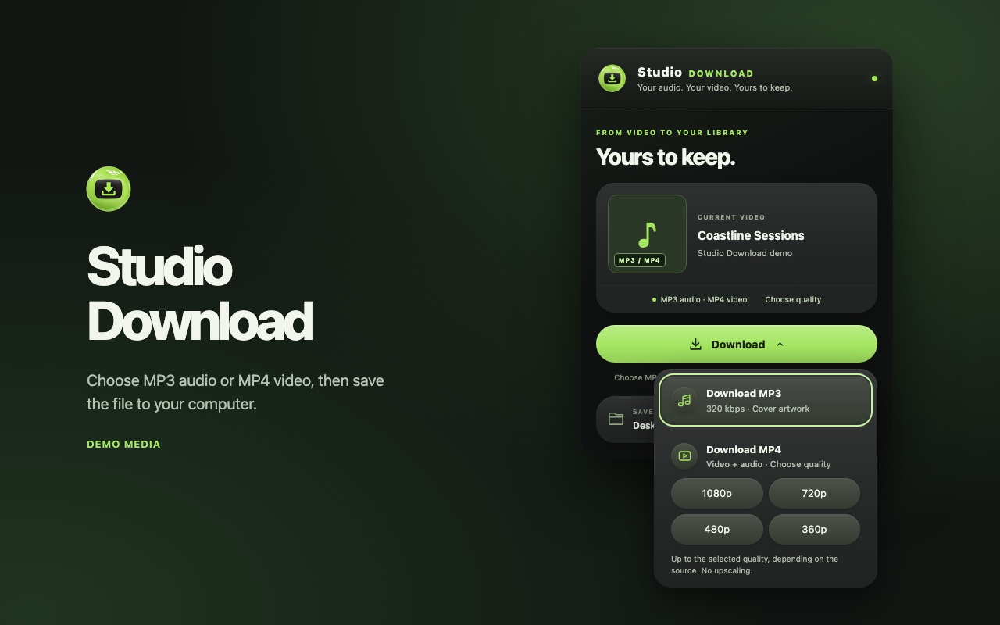

Save the audio
Export MP3 audio at up to 320 kbps with cover art when available.
Chrome extension
Choose an audio or video format right on the YouTube watch page. The macOS companion saves your files to your Desktop.

Export MP3 audio at up to 320 kbps with cover art when available.
Choose 360p, 480p, 720p, or up to 1080p. The result depends on the source quality.
Auto-Skip uses YouTube’s Skip button when it appears on the active video.
Setup
Downloads need the separate macOS companion. Save media you own or have permission to download.
Open Studio Download from the toolbar or use its controls below the video.
For MP4, choose your preferred resolution. You can follow active and recent jobs in the popup.
The companion saves files in Desktop/mp3 or Desktop/mp4. The popup can reveal the file when it’s ready.
Use Chrome and install the Studio Download macOS companion separately. The companion performs the download and conversion.
It works when YouTube shows a usable Skip button. Ads without one can still play.
It reads details about the current YouTube video and stores recent jobs locally. The companion contacts YouTube’s media services when you request a download. Read the full privacy policy.